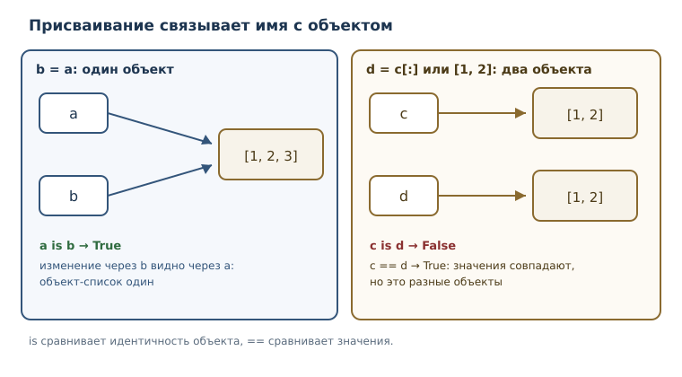
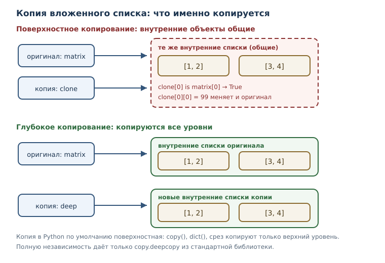

Ссылки, алиасы и копирование
Почему изменения видны «в другом месте»: ссылочная семантика, алиасинг, вложенные структуры, поверхностное и глубокое копирование.
В этой главе
Самый неприятный класс дефектов в начале обучения выглядит так: программа меняет одну переменную, а «портится» совсем другая. Список, который вы передали в функцию, после вызова оказывается другим. Резервная копия, сделанная «на всякий случай», меняется вместе с оригиналом. Причина не в ошибке синтаксиса и не в опечатке, а в устройстве модели памяти Python: имена не хранят значения, они ссылаются на объекты. Пока вы работаете с числами и строками, это незаметно. Как только появляются списки, словари и вложенные структуры, различие становится источником и ошибок, и мощных приёмов.
В этой главе вы разберётесь, что именно происходит при присваивании, чем
is отличается от ==, почему «копия» иногда оказывается лишь вторым именем
и как получить настоящую независимую копию.
18.1 Что вы сможете после этой главы
- объяснять, что присваивание копирует ссылку, а не объект;
- предсказывать, когда изменение через одно имя видно через другое;
- различать поверхностное и глубокое копирование и выбирать нужное;
- строить вложенные структуры и понимать, какие их части общие, а какие нет;
- не попадать в ловушку изменяемого значения по умолчанию и узнавать её в чужом коде.
18.2 Задача: «изменил одно — поменялось другое»
Представьте, что программа хранит список покупок и делает резервную копию перед сортировкой.
shopping = ["молоко", "хлеб", "сыр"]
backup = shopping
shopping.sort()
print(shopping)
print(backup)
['молоко', 'сыр', 'хлеб']
['молоко', 'сыр', 'хлеб']
Сортировка изменила shopping, но изменилась и «копия» backup. Строка
backup = shopping не создала второй список: она связала второе имя с тем же
самым объектом. Пока вы не увидите модель, в которой имя — это ссылка, такое
поведение кажется нелогичным. С ним мы и будем разбираться.
18.3 Имена, объекты и ссылки
Вспомним модель, введённую в главе 3: значение живёт в объекте, имя — это способ обратиться к объекту. Инструкция присваивания не копирует объект, она связывает имя с объектом. Поэтому у одного объекта может быть несколько имён.
Ссылочная семантика — правило, по которому присваивание копирует ссылку на объект, а не сам объект. Из него следует всё остальное в этой главе.

a = [1, 2, 3]
b = a
b.append(4)
print(a)
print(a is b)
[1, 2, 3, 4]
True
a is b истинно, потому что оба имени ссылаются на один объект. Внимание:
is сравнивает не значения, а идентичность — тот ли это объект. Для
значений служит ==.
a = [1, 2]
b = [1, 2]
print(a == b)
print(a is b)
True
False
Два разных списка с одинаковым содержимым равны, но не идентичны. Правило
простое: == отвечает на вопрос «одинаковы ли значения», is — «это один и
тот же объект». Для None принято писать is None, потому что None —
единственный объект; для чисел, строк и списков сравнение через is почти
всегда ошибка.
С неизменяемыми объектами ссылочная семантика не видна: число нельзя изменить,
операция b = b + 1 создаёт новый объект и связывает b с ним, а a
продолжает указывать на старое число.
a = 10
b = a
b = b + 1
print(a, b)
10 11
Ссылочная семантика — не случайность реализации, а осознанное решение языка. Присваивание в Python не перекладывает содержимое объекта: оно связывает имя с объектом, и это одинаково дешёвая операция и для числа, и для списка из миллиона элементов. Благодаря такой модели большой словарь можно передать в функцию, не копируя его: достаточно передать ссылку. Цена решения — необходимость явно думать о том, кто владеет объектом и кто вправе его менять.
18.4 Алиасинг (псевдонимы)
Алиасинг (псевдонимы) — ситуация, когда два имени ссылаются на один изменяемый объект, поэтому изменение видно через оба. Алиасинг сам по себе — не ошибка: иногда он нужен и удобен. Опасен он тогда, когда программа считает имена независимыми.
prices = {"яблоко": 90}
backup = prices
backup["банан"] = 120
print(prices)
print(prices is backup)
{'яблоко': 90, 'банан': 120}
True
Алиасинг часто возникает незаметно — при передаче аргумента в функцию. Параметр и аргумент становятся двумя именами одного объекта.
def add_item(items, item):
items.append(item)
numbers = [1, 2]
add_item(numbers, 3)
print(numbers)
[1, 2, 3]
Функция не возвращала список, но исходный numbers изменился: items внутри
функции — это ещё одно имя того же списка. Такое поведение называют
побочным эффектом. Оно бывает намеренным (например, функция добавляет
запись в переданный журнал), но чаще оказывается неожиданным.
Если функция не должна менять аргумент, есть два способа: не изменять объект, а создавать новый либо скопировать аргумент на входе и менять копию.
def add_item(items, item):
items = items + [item]
return items
numbers = [1, 2]
result = add_item(numbers, 3)
print(numbers)
print(result)
[1, 2]
[1, 2, 3]
Здесь items = items + [item] создаёт новый список и связывает с ним
локальное имя items; исходный объект не тронут. Это тот же приём, что и с
неизменяемыми значениями: результат — новое значение, вход — прежний.
Из этого правила следует требование к аккуратному проектированию функций.
Если функция меняет переданный объект, это должно быть видно из её имени и
документации — например, add_item меняет, а with_item возвращает новое.
Обратная ошибка тоже встречается: функция возвращает внутренний список
объекта, вызывающий код его меняет, и состояние структуры незаметно портится.
Поэтому функция, отдающая наружу коллекцию, нередко возвращает её копию, а не
сам объект. Такой приём называют защитным копированием, и он платит небольшим
расходом памяти за предсказуемость поведения.
18.5 Вложенная структура
До сих пор объекты были простыми. Реальные сведения устроены сложнее: вложенная структура — коллекция внутри коллекции: список списков, словарь списков и т. п. Вложенность добавляет второй уровень ссылок, и именно на нём чаще всего ломаются интуиции о копировании.
matrix = [[1, 2], [3, 4]]
same = matrix
same[0][0] = 99
print(matrix)
[[99, 2], [3, 4]]
Разберём, что здесь есть. Есть внешний список из двух элементов. Каждый
элемент — ссылка на внутренний список. Имена matrix и same указывают на
внешний список, поэтому изменение вложенного элемента видно через оба имени.
matrix ──▶ [ •, • ] внешний список
│ │
▼ ▼
[99, 2] [3, 4] внутренние списки
Имена ссылаются на внешний список; внешний список ссылается на внутренние.
Изменение same[0][0] идёт по цепочке: имя → внешний список → внутренний
список → элемент.
user = {"имя": "Анна", "оценки": [4, 5]}
print(user["оценки"][0])
user["оценки"].append(3)
print(user)
4
{'имя': 'Анна', 'оценки': [4, 5, 3]}
Словарь, значения которого — списки, устроен так же: ключ ведёт к объекту- списку, и этот список можно менять, не трогая сам словарь.
18.6 Поверхностное копирование
Чтобы получить независимую копию списка, его нужно явно скопировать.
Поверхностное копирование — копирование только верхнего уровня структуры;
вложенные объекты остаются общими. Для списка есть три равнозначных способа:
метод copy(), полный срез и функция list().
a = [1, 2]
b = a.copy()
b.append(3)
print(a, b)
c = a[:]
c[0] = 99
print(a, c)
[1, 2] [1, 2, 3]
[1, 2] [99, 2]
Для плоского списка этого достаточно: копия независима. Но для вложенной структуры поверхностное копирование копирует только внешний список, а внутренние остаются теми же объектами.
matrix = [[1, 2], [3, 4]]
clone = matrix.copy()
clone[0][0] = 99
print(matrix)
print(clone)
print(matrix[0] is clone[0])
[[99, 2], [3, 4]]
[[99, 2], [3, 4]]
True
Значение True в последней строке — приговор: первый внутренний список у
копии и у оригинала один и тот же. Поверхностное копирование создало новый
внешний список, но элементы-ссылки скопировало как есть.

Для словаря поверхностная копия делается методом copy() или функцией
dict(); для множества — методом copy(). Модуль copy даёт общую функцию
copy.copy, которая работает с любым поддерживающим копирование объектом.
Стоит помнить, что многие встроенные операции возвращают новый объект, а не
меняют старый: sorted(...), полный срез [::] и list(...) дают
поверхностную копию верхнего уровня. Для плоской коллекции этого достаточно,
для вложенной — нет, и различие снова решает вопрос «кто владеет внутренними
объектами».
import copy
original = {"a": [1]}
shallow = copy.copy(original)
shallow["a"].append(2)
print(original)
print(original["a"] is shallow["a"])
{'a': [1, 2]}
True
Функция dict(other) даёт тот же результат, что и метод copy(): новый
словарь, но с прежними ссылками на значения. Поэтому список внутри значения
остаётся общим.
settings = {"темы": ["светлая"], "язык": "ru"}
shallow_copy = dict(settings)
shallow_copy["темы"].append("тёмная")
print(settings)
print(settings["темы"] is shallow_copy["темы"])
{'темы': ['светлая', 'тёмная'], 'язык': 'ru'}
True
18.7 Глубокое копирование
Когда нужна полностью независимая структура, применяют глубокое
копирование — рекурсивное копирование всех вложенных объектов. В стандартной
библиотеке для этого есть copy.deepcopy.
import copy
matrix = [[1, 2], [3, 4]]
deep = copy.deepcopy(matrix)
deep[0][0] = 99
print(matrix)
print(deep)
print(matrix[0] is deep[0])
[[1, 2], [3, 4]]
[[99, 2], [3, 4]]
False
Теперь изменение копии не затронуло оригинал: внутренние списки тоже
скопированы. deepcopy обходит структуру рекурсивно, копируя каждый
изменяемый объект; для неизменяемых объектов (числа, строки, кортежи из
неизменяемых) копия не нужна, и функция возвращает тот же объект.
Глубокое копирование умеет обрабатывать и структуры, которые ссылаются сами на себя: оно запоминает уже скопированные объекты и не уходит в бесконечную рекурсию.
import copy
a = [1]
a.append(a)
b = copy.deepcopy(a)
print(len(b))
print(b[1] is b)
print(b is a)
2
True
False
Глубокая копия нужна, когда структура действительно должна быть независимой. У неё есть цена: время на обход всех уровней и дополнительная память. Если достаточно независимости верхнего уровня, поверхностного копирования хватает и оно дешевле. Выбор диктуется задачей, а не привычкой: «всегда deepcopy» — такая же крайность, как «никогда не копировать».
Есть и содержательное ограничение: deepcopy копирует только структуру
данных, а не внешние ресурсы. Если объект описывает открытый файл, сетевое
соединение или другой ресурс операционной системы, копирование такого объекта
бессмысленно: две копии не могут независимо владеть одним ресурсом. Для
подобных объектов предусмотрен отдельный протокол настройки копирования; о
нём вы узнаете, когда познакомитесь с собственными классами. Пока достаточно
запомнить: глубокое копирование — инструмент для коллекций и вложенных
структур, а не универсальное средство «сделать всё независимым».
18.8 Изменяемое значение по умолчанию
Отдельный случай ссылочной семантики — значения параметров по умолчанию. Значение по умолчанию вычисляется один раз, при определении функции, и сохраняется в её объекте. Если это изменяемый объект, все вызовы будут делить его между собой.
Изменяемое значение по умолчанию — ошибка проектирования, когда изменяемый объект используется как значение по умолчанию и сохраняет изменения между вызовами.
def collect(item, bucket=[]):
bucket.append(item)
return bucket
print(collect("а"))
print(collect("б"))
print(collect("в"))
['а']
['а', 'б']
['а', 'б', 'в']
Функция выглядит так, будто каждый вызов начинает с пустого списка, но список
создан один раз — при определении collect. Все вызовы получают один и тот
же объект, поэтому результаты накапливаются. То же случится со словарём или
множеством в роли значения по умолчанию.
Исправление стандартное: по умолчанию ставить None, а нужный объект
создавать внутри функции.
def collect(item, bucket=None):
if bucket is None:
bucket = []
bucket.append(item)
return bucket
print(collect("а"))
print(collect("б"))
['а']
['б']
Проверка is None здесь обязательна: если бы мы написали if not bucket, то
пустой список, переданный явно, тоже считался бы отсутствующим, и вызов
collect("а", []) не изменил бы переданный список. None — обычный признак
«аргумент не передан», пока None не входит в число допустимых значений. Если
он допустим, безопаснее уникальный маркер-объект, например sentinel = object().
18.9 Типичные ошибки
- Считать
b = aкопированием. Это второе имя того же объекта. - Проверять равенство через
is.isсравнивает идентичность; для значений нужно==. Исключение — сравнение сNone. - Считать
list.copy()полной копией. Для вложенной структуры копия поверхностная, внутренние объекты общие. - Путать
deepcopyс бесплатной операцией. Она обходит всю структуру, поэтому дороже; для больших данных это заметно. - Изменять аргумент, когда этого не ждут. Функция, меняющая переданный список, обязана быть очевидной по имени и документации, иначе дефект всплывёт далеко от места вызова.
- Изменяемое значение по умолчанию. Список, словарь или множество в сигнатуре сохраняет изменения между вызовами.
- Ждать, что кортеж защитит содержимое. Кортеж неизменяем, но если в нём лежит список, сам список менять можно.
Проверим последний пункт: неизменяемость кортежа относится к набору ссылок, а не к объектам, на которые они указывают.
t = (1, [2, 3])
t[1].append(4)
print(t)
(1, [2, 3, 4])
18.10 Упражнения
1. Прогнозирование вывода
Не запуская код, запишите результат. Затем проверьте и объясните.
a = [1, 2]
b = a
b = b + [3]
print(a)
print(b)
Сравните с вариантом, где вместо b = b + [3] стоит b.append(3).
2. is или ==
Для каждой пары значений определите, что выведет print(x is y) и
print(x == y), и объясните различие:
x = [1, 2]
y = [1, 2]
Затем проверьте на числах: x = 1000, y = int("1000"), а потом то же
самое с 100 вместо 1000. Объясните, почему для небольших чисел результат
is отличается и почему опираться на это нельзя.
3. Функция портит аргумент
Функция должна возвращать список без отрицательных чисел, но исходный список тоже меняется:
def positive(numbers):
for number in numbers:
if number < 0:
numbers.remove(number)
return numbers
data = [3, -1, 4, -2]
print(positive(data))
print(data)
Объясните, почему data изменился, и предложите исправление, которое
не трогает входной список.
4. Три способа скопировать список
Скопируйте список [1, 2, 3] тремя способами: методом copy(), полным срезом
и функцией list(). Проверьте, что копии равны исходному списку, но не
идентичны ему, и что изменение копии не меняет исходный список.
5. Поверхностная ловушка
Дан список списков [[1, 2], [3, 4]]. Сделайте его поверхностную копию,
измените второй вложенный список в копии и объясните, что произошло с
оригиналом. Затем повторите с copy.deepcopy и сравните результаты.
6. Вложенный словарь
Дан словарь {"имя": "Анна", "оценки": [4, 5]}. Сделайте копию, добавьте
оценку в копию и покажите, что произойдёт с оригиналом при поверхностном и при
глубоком копировании. Объясните различие через понятие вложенной структуры.
7. Значение по умолчанию
Функция накапливает историю вызовов, но записи «переезжают» между вызовами:
def log(message, history=[]):
history.append(message)
return history
print(log("старт"))
print(log("шаг 1"))
Исправьте функцию так, чтобы каждый вызов с одним аргументом начинал новую историю, но при явно переданном списке запись шла в него.
8. Копия внутри функции
Напишите функцию without_duplicates(items), которая возвращает новый список
без повторяющихся элементов, не изменяя входной. Проверьте на списке, который
после вызова должен остаться прежним.
9. Резервная копия настроек
Программа хранит настройки в виде словаря, значения которого — списки.
Напишите функцию snapshot(settings), которая возвращает независимую копию
настроек. Докажите независимость: измените копию и покажите, что исходные
настройки не изменились. Объясните, почему dict(settings) здесь не подходит.
10. Где алиасинг полезен
Приведите два примера, когда алиасинг (два имени на один объект) полезен, и два примера, когда он опасен. Для каждого примера напишите короткий код, который показывает эффект, и объясните, что видит программист.
18.11 Проверка понимания
- Что копирует присваивание — объект или ссылку? Как это проверить?
- Чем
isотличается от==и когдаisуместен? - Почему изменение списка через одно имя видно через другое имя?
- Чем поверхностное копирование отличается от глубокого? Приведите пример, где различие проявляется.
- Почему значение по умолчанию создаётся один раз, а не при каждом вызове?
- Почему кортеж с вложенным списком нельзя назвать полностью неизменяемым?
- В каких случаях глубокое копирование не нужно?
18.12 Что дальше
Модель ссылок объясняет, почему структуры данных ведут себя «не так, как кажется». Следующий шаг — вывести сведения за пределы памяти программы: сохранить их в файл и прочитать обратно. Там та же логика продолжится на другом уровне: файл — внешний ресурс, который нужно открыть и корректно закрыть, а форматы вроде CSV и JSON придётся преобразовывать в знакомые словари и списки и обратно.